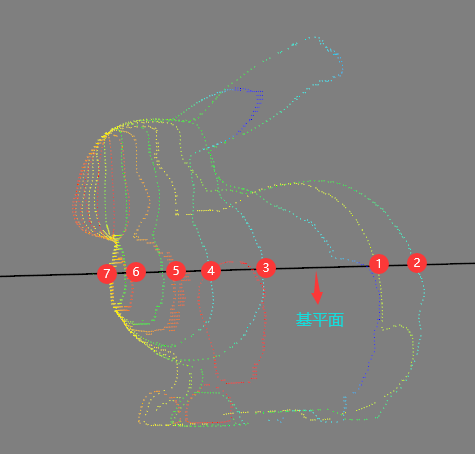
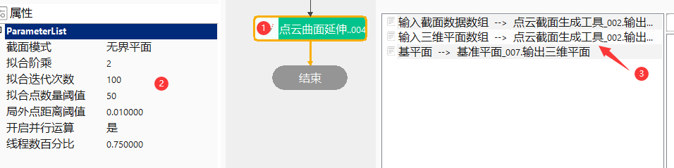

Công cụ tạo điểm mở rộng bề mặt đám mây điểm chủ yếu dùng để khớp các điểm mặt cắt thu được từ công cụ tạo mặt cắt đám mây điểm thành đường cong, tính giao điểm giữa đường cong và mặt phẳng chuẩn (mặt chuẩn cần vuông góc với mặt phẳng cắt), tức là tạo điểm mở rộng.

Công cụ này chủ yếu được sử dụng kết hợp với công cụ tạo mặt cắt, dùng cho trường hợp tính giao điểm giữa dữ liệu đám mây điểm được cắt bởi công cụ tạo mặt cắt và mặt phẳng chuẩn đã thiết lập;
Thêm “Công cụ tạo điểm mở rộng bề mặt đám mây điểm”, đồng thời liên kết các chuỗi dữ liệu liên quan theo yêu cầu, như trong Hình 3.1;

Không có
| Tên tham số | Mô tả tham số |
|---|---|
| Mảng dữ liệu mặt cắt đầu vào | Dữ liệu mặt cắt đầu vào |
| Mảng mặt phẳng 3D đầu vào | Nhập mặt phẳng không giới hạn khi cắt dữ liệu đám mây điểm |
| Mảng mặt phẳng chữ nhật 3D đầu vào | Nhập mặt phẳng chữ nhật 3D khi cắt dữ liệu đám mây điểm |
| Mảng mặt phẳng tròn 3D đầu vào | Nhập mặt phẳng tròn 3D khi cắt dữ liệu đám mây điểm |
| Mặt phẳng chuẩn | Mặt phẳng chuẩn, cần vuông góc với mặt phẳng cắt (mảng mặt phẳng 3D đầu vào/mảng mặt phẳng chữ nhật 3D đầu vào/mảng mặt phẳng tròn 3D đầu vào) |
| Tên tham số | Mô tả tham số |
|---|---|
| Chế độ mặt cắt | Bao gồm ba loại: mặt phẳng không giới hạn, mặt phẳng chữ nhật 3D, mặt phẳng tròn 3D |
| Bậc khớp | Bậc khớp khi khớp đường cong cho tập điểm của từng mặt phẳng cắt, phạm vi là [1，10] |
| Số lần lặp khớp | Số lần lặp khi khớp đường cong cho tập điểm của từng mặt phẳng cắt, phạm vi là [1，1000] |
| Ngưỡng số lượng điểm khớp | Số lượng điểm tối thiểu tham gia khớp, phạm vi là [1，100000000] |
| Ngưỡng khoảng cách điểm ngoại lai | Giá trị cực hạn khoảng cách để phán định là điểm ngoại lai, phạm vi là (0，100000000] |
| Bật tính toán song song | Có bật tính toán song song hay không, khi chọn Có, thuật toán sẽ bật phương thức tính toán song song OpenMp, có thể tăng tốc độ tính toán, nhưng có thể xuất hiện tình trạng thời gian xử lý không ổn định; khi chọn Không, thuật toán sẽ tắt tính toán song song OpenMp |
| Phần trăm số luồng | Thiết lập phần trăm số luồng tính toán song song, phạm vi hợp lệ là (0, 0.75], tương ứng biểu thị phạm vi phần trăm (0%, 75%] |
| Tên tham số | Mô tả tham số |
|---|---|
| Tập điểm đầu ra | Xuất tập điểm mở rộng |
| Tên tham số | Mô tả tham số |
|---|---|
| Tập điểm đầu ra | Xuất tập điểm mở rộng |
| Kết quả thực thi | Kết quả thực thi của công cụ |
| Thời gian thực thi | Thời gian thực thi của công cụ |
Tham khảo “\Samples\3D\点云\点云截面生成工具.gvp”.